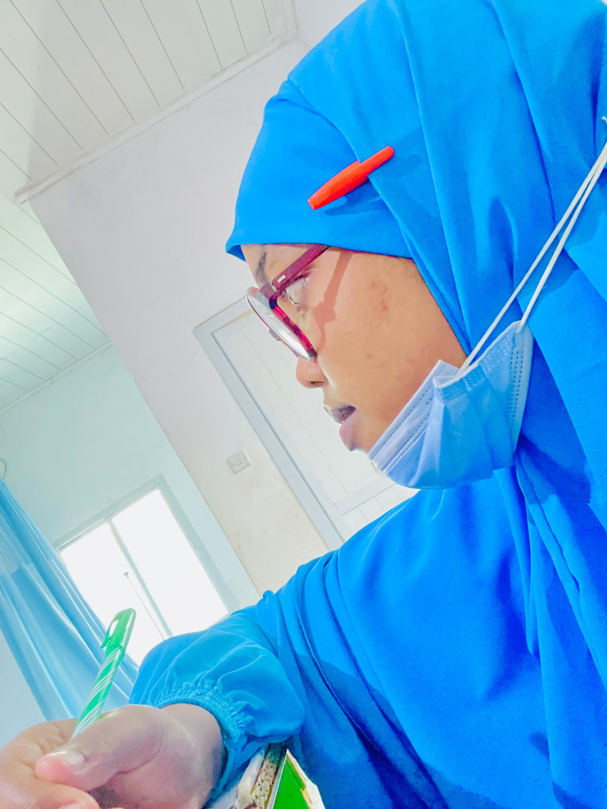
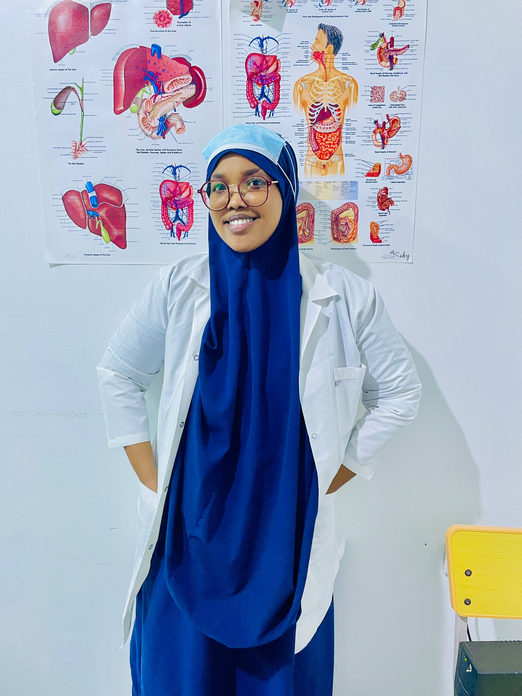

Year 1 · Genesis
01The Beginning
A resolute first step toward healing, grounded in curiosity, dedication, and the belief that service can change lives.
From medical student to graduate physician: a story of study, compassion, clinical practice, and a calling to heal.
A resolute first step toward healing, grounded in curiosity, dedication, and the belief that service can change lives.
Endless study, anatomy, pathology, and the rigorous science that builds a capable and caring physician.
Knowledge became care: listening, diagnosing, learning from patients, and growing with every round.
Long nights and demanding exams became a source of resilience, strength, and empathy.
A new physician emerges—ready to bring knowledge and a healer’s heart to her community.


Her journey brought her here. Now, her next chapter begins.Celebrate Her Story →